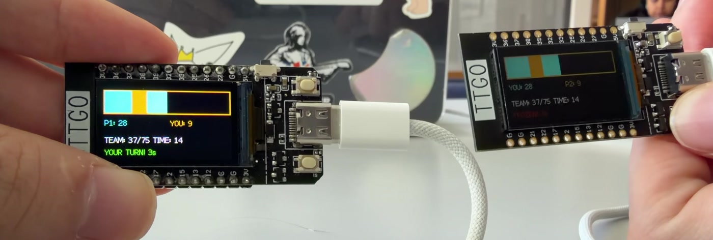
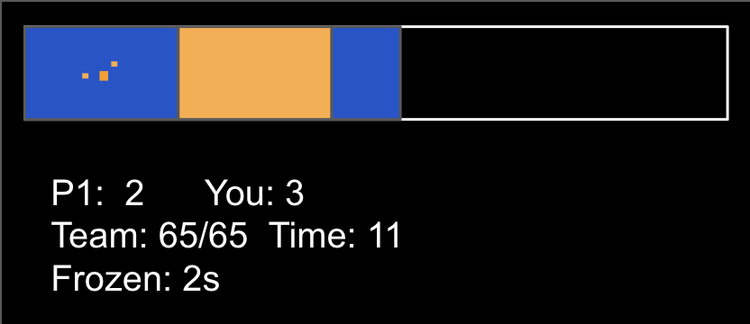
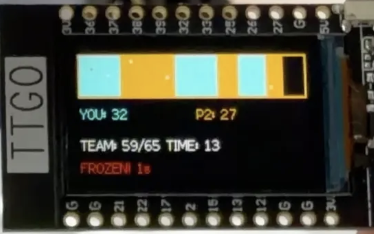
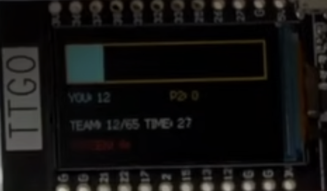
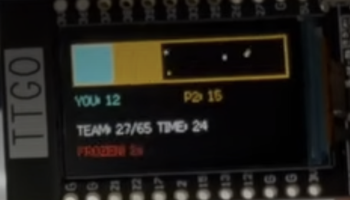
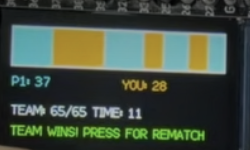

Freeze Frame: Collaborative Button Mash Game
Freeze Frame is a two-player button mashing game where both players work together instead of against each other. Both players fill up one shared progress bar and try to reach the target before the timer runs out. The twist is that only one person can press at a time, while the other is frozen for a random 2 to 5 seconds before the turns switch. Each player's presses show up in their own color, cyan or orange, so you can see who added what to the bar.
For this project, we used two LILYGO T-Display ESP32s and two USB-C cables, one for each player. Either button on the board counts as a press.
Artistic Vision
For our third module, Ho Jin and I wanted to rethink the traditional button-mashing game by turning an individual competition into a collaborative experience. Rather than having two players compete against each other, we designed a game where both players work toward a shared goal, contributing to the same progress bar under a time constraint.

The central concept was to introduce an element of unpredictability through a random freezing mechanism. At any given moment, only one player can contribute, while the other is temporarily frozen. Every few seconds, the roles switch, requiring players to react quickly and rely on each other's contributions.
We also wanted the visual design to reinforce this sense of collaboration. Each player is represented by a distinct color, with their contributions accumulating in one shared progress bar. The display communicates changes in gameplay through visual effects, including a color-changing bar outline, screen dimming, and sparks that appear when a partner contributes.
Ultimately, we wanted to create a simple but engaging interaction where success depends on both players working together.
My Role
My role consisted primarily of the visual design and communication aspect of the game. Since we wanted to build around the existing code, I decided to modify the existing progress bar display to show a single bar with color-coded contributions from both players. I also adapted the existing ESP-NOW communication to synchronize the shared progress bar and freeze status across both devices.
- Shared bar display: I rewrote the progress bar part of
drawScreen(). The starter code drew a separate lane for each player, so I combined them into one bar that fills up toward the team's target, with each player's presses drawn in their own color (cyan for Player 1 and orange for Player 2). - Turn blocks: I changed the bar from two stacked colors into alternating blocks, one for each turn. I added a
pressOwnerlist and anupdateHistory()function that remember who made each press in order, so the bar can draw each turn as its own block. The list resets at the start of every round. - Turn-colored outline: I made the outline around the bar change to the color of whoever's turn it is, using
playerColors[1 - frozenPlayer]. I also drew it 2 pixels thick so it's easier to notice on the small screen. - Dimming: I used the screen's backlight pin (
TFT_BL) withanalogWriteto dim the frozen player's whole screen to a low brightness and bring it back to full brightness when their turn starts. - Sparks: I made the frozen player's screen show sparks every time their partner presses. The code checks how much the partner's count went up since the last screen update and draws 6 tiny squares per new press at random spots on the bar, in white or the partner's color, while the screen flashes bright.
- Smoother updates: I made Player 0 call
sendState()right after every press instead of only on the 250ms heartbeat, so the sparks and the bar update right away on Player 1's board instead of jumping in clumps. - Timer fix: I fixed the timer so it stops when the game ends. I added a
finalTimeLeftvariable that saves the time left at the moment the game ends, and both boards show that number instead of counting down to 0 after a win.
Design Decisions
1. Shared Progress Bar
At first, we considered giving each player their own progress bar and then having a third bar fill in based on how each player filled theirs, but we found it would be visually simpler to follow along with one progress bar. It also made the game feel more collaborative rather than competitive.
In the first version, the bar stacked the two colors, so all of the cyan presses were on the left and all of the orange presses came after. When we played it, I realized you couldn't actually tell how the turns went, so I changed it so every turn adds its own block in that player's color. Now the bar looks like cyan, orange, cyan, orange, and each turn starts filling from where the last one stopped.


From my initial sketch (left) to the final bar on the board (right)
2. Random Freeze
Another important design decision was the random freeze. With the random freeze, the players can't mash at the same time. Only one player is active, and the other has to wait for their turn. At the start of each round, one player is randomly picked to be frozen first, and each freeze lasts a random 2 to 5 seconds. Any presses while you're frozen don't count.
This added a fun and unexpected twist to the game. While button mashing is usually pretty predictable, when each player gets to go became kind of unpredictable, so you have to keep watching your screen and be ready to start pressing as soon as your turn starts. It also means neither player can win on their own.
3. Dimming
After the first round of playing, I felt that given how tiny the screen is, it was hard to tell whose turn it was just from the text. I had already made the outline of the bar change to the color of whoever's turn it is, but it was still pretty small. I wanted something that would cover the whole screen and send a clear signal to the player, so when you're frozen, your whole screen dims, and when it's your turn, it goes back to full brightness.

4. Sparkling
Another one of my visual designs was the sparkles. I thought adding sparks whenever your partner presses would add another visual cue that it's not your turn, and also give the frozen player something to watch while they wait. Every time your partner presses, little white and colored sparks show up on your progress bar and your screen flashes bright for a second. I liked that you can kind of see your partner's presses coming through on your own board.

5. Difficulty and Win/Loss Conditions
To make each round feel different, every round randomly picks one of three difficulty settings, where a higher target comes with less time:
- Easier: 65 presses in 30 seconds
- Medium: 70 presses in 27 seconds
- Harder: 75 presses in 25 seconds
The team wins if the total presses reach the target before the timer hits 0, and loses if time runs out first. When the game ends, the screen shows "TEAM WINS!" or "TIME UP!" and the timer stops. After that, either player can press a button for a rematch.

Technical Implementation
Our implementation uses two LILYGO T-Display ESP32 devices that communicate wirelessly through ESP-NOW. Both boards run the same code, and the only difference is
PLAYER_ID, which is 0 on one board and 1 on the other.
Ho Jin built the game logic, including the shared scoring, the random freeze, the timing and difficulty, the win/loss conditions, and the syncing between the two boards. I built the visuals on top of that, including the turn blocks, the outline, the dimming, and the sparks.
How the two boards communicate
The two boards don't do the same job. The board with PLAYER_ID 0 runs the timer, decides who
is frozen, keeps the official count for both players, and decides if the team won. The board with
PLAYER_ID 1 sends its own presses to Player 0 and then copies whatever game state Player 0
sends back. This way, both screens always agree on the time and whose turn it is, since only one board
is keeping track of them.
The message
Everything the boards share is in one Message struct that gets broadcast over ESP-NOW. Ho
Jin added fields to the starter code's message so it could send the whole game state instead of just the
press count.
typedef struct {
uint8_t teamId;
uint8_t playerId;
uint16_t presses;
uint8_t roundId;
uint8_t turnId;
uint8_t frozenId;
...
uint32_t timeLeft;
uint32_t freezeLeft;
uint32_t sequence;
} Message;
When Player 0 gets a message from Player 1, it only counts the presses if it's actually Player 1's turn.
Every message has a roundId and turnId, so if a press shows up late after the
turn already switched, the IDs won't match and it gets ignored. Player 0 also numbers every message it
sends with sequence, so Player 1 can ignore old messages that arrive out of order.
if (gameStarted && !gameOver && frozenPlayer != 1 && msg.roundId == roundId && msg.turnId == turnId) {
if (msg.turnPresses > lastAcceptedPresses) {
counts[1] += msg.turnPresses - lastAcceptedPresses;
lastAcceptedPresses = msg.turnPresses;
}
}updateFreeze()
This runs on Player 0 and switches the turns. When the freeze timer runs out, it flips who is frozen
using 1 - frozenPlayer, which turns 0 into 1 and 1 into 0. Then it picks a new random freeze
between 2 and 5 seconds and sends the new state to Player 1 right away.
if (remainingTime(freezeEndsAt) == 0) {
frozenPlayer = 1 - frozenPlayer;
turnId++;
freezeEndsAt = millis() + random(2000, 5001);
sendState();
}Drawing the turn blocks
Each board keeps a list called pressOwner that remembers who made each press, in order.
updateHistory() adds the new presses to the list whenever the counts go up, and then
drawScreen() goes through the list and draws each group of presses from the same player as
one block in their color. The outline around the bar is drawn in
playerColors[1 - frozenPlayer], which is the color of whoever's turn it is.
while (i < historyLen) {
int j = i;
while (j < historyLen && pressOwner[j] == pressOwner[i]) j++; // end of this block
int end = constrain((j * BAR_W) / target, 0, BAR_W);
tft.fillRect(BAR_X + filled, BAR_TOP, end - filled, BAR_H, playerColors[pressOwner[i]]);
filled = end;
i = j;
}Sparks and dimming
For the sparks, the code checks if the partner's count went up since the last time the screen was
drawn. If it did and you're frozen, it draws 6 tiny squares per press at random spots on the bar. The
brightness is controlled with analogWrite on the TFT_BL pin, from 0 to 255, so
it flashes to 255 with the sparks and stays at 40 the rest of the time you're frozen. The sparks
disappear on their own since the bar gets redrawn on the next update.
if (frozen && newPresses > 0) {
for (int s = 0; s < min(newPresses, 4) * 6; s++) {
tft.fillRect(BAR_X + random(BAR_W - 3), BAR_TOP + random(BAR_H - 3), 3, 3,
random(2) ? TFT_WHITE : playerColors[partner]);
}
analogWrite(TFT_BL, 255); // flash bright with the sparks
} else {
analogWrite(TFT_BL, frozen ? 40 : 255); // dim while frozen, full otherwise
}Technical Challenges
I struggled to make the bars stack on top of each other. The starter code drew a separate bar for each player, so I had to combine them into one bar where the second player's part starts right where the first player's part ends. I also had to make sure the second part only used the space that was left, or else it would go past the end of the bar.
int fill0 = constrain((counts[0] * BAR_W) / target, 0, BAR_W);
int fill1 = constrain((counts[1] * BAR_W) / target, 0, BAR_W - fill0);
tft.fillRect(BAR_X, BAR_TOP, fill0, BAR_H, playerColors[0]);
tft.fillRect(BAR_X + fill0, BAR_TOP, fill1, BAR_H, playerColors[1]);
Even after the stacking worked, it wasn't what I wanted, since it always showed all the cyan first and
then all the orange, and you couldn't see the turns. To fix this, the bar couldn't just be drawn from the
two totals anymore, so I added the pressOwner list to remember the order of the presses.
The tricky part was the moment the turn switches, since Player 1 can get one message where both counts
went up. I made it add the frozen player's presses first, since those came from the turn that just
ended, so they don't end up in the wrong block.
Another problem was the timer. When the team won, the screen said "TEAM WINS!" but the timer kept counting down to 0. This was because the time left was always calculated from the current time, so I fixed it by saving the time left at the moment the game ends and showing that instead.
// before
timeLeft = remainingTime(roundStartedAt + timeLimitMs);
// after
timeLeft = gameOver ? finalTimeLeft : remainingTime(roundStartedAt + timeLimitMs);Lastly, the sparks were choppy on Player 1's board at first. Player 0 was only sending its count every 250 milliseconds, so the sparks would show up in clumps. Sending the state right after every press fixed this and also made Player 1's bar move more smoothly.
if (PLAYER_ID == 0) {
counts[PLAYER_ID]++;
checkForWinner();
sendState(); // send every press so Player 1 sees sparks right away
}